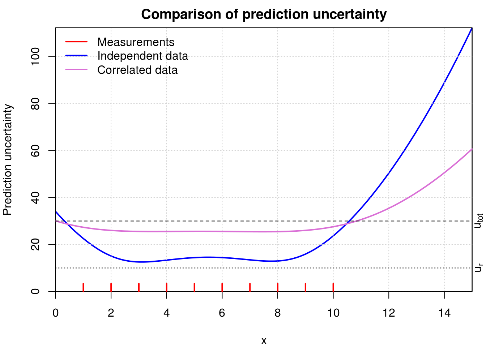

Chapitre 5 Cases study
5.1 Importance of systematic errors
5.1.1 Synthetic data
# Define model
fExpr = function(a,b,c) a + b*x + c*x^2
xm = 1:10 # Controle variable
xp = seq(0,15,by=0.1) # Grille de points pour tracer les courbes
x = xm
a = 1; b = 2; c = 3
ym = fExpr(a,b,c) # Evaluate model
sdm = 10
yo = ym + sdm * rnorm(length(ym),mean=0,sd=1) # Add random noise
uym = 3*rep(sdm,length(ym)) # Declare larger uncertainty
pander(data.frame(xm,yo,uym), digits=0)| xm | yo | uym |
|---|---|---|
| 1 | -6 | 30 |
| 2 | 20 | 30 |
| 3 | 45 | 30 |
| 4 | 34 | 30 |
| 5 | 90 | 30 |
| 6 | 126 | 30 |
| 7 | 156 | 30 |
| 8 | 204 | 30 |
| 9 | 256 | 30 |
| 10 | 312 | 30 |
5.1.2 Simple regression with quadratic calibration model
The model is \[ y_i = m(x_i;\theta) + \epsilon_{i,tot}, \] with \[ m_i(\theta) = a + b*x_i + c*x_i^2 \]
A weighted least-squares fit is done, with weights \(w_i = 1/u^2_{tot}\).
reg3 = lm(yo ~ 1 + xm + I(xm^2),
weights=1/uym^2)On trace la courbe du modèle correspondant aux valeurs optimales des paramètres. Le fit a l’air très bon (le modèle passe par toutes les barres d’erreur)…
5.1.2.1 Validation
Considérons d’abord l’affichage standard des résultats de la régression linéaire pour lm().
##
## Call:
## lm(formula = yo ~ 1 + xm + I(xm^2), weights = 1/uym^2)
##
## Residuals:
## Min 1Q Median 3Q Max
## -0.73748 -0.09575 0.01983 0.20531 0.43798
##
## Coefficients:
## Estimate Std. Error t value Pr(>|t|)
## (Intercept) -8.1247 12.7703 -0.636 0.544868
## xm 5.2623 5.3334 0.987 0.356676
## I(xm^2) 2.6714 0.4725 5.654 0.000772 ***
## ---
## Signif. codes: 0 '***' 0.001 '**' 0.01 '*' 0.05 '.' 0.1 ' ' 1
##
## Residual standard error: 0.3619 on 7 degrees of freedom
## Multiple R-squared: 0.992, Adjusted R-squared: 0.9898
## F-statistic: 436 on 2 and 7 DF, p-value: 4.505e-08Tout semble normal: les valeurs de \(R^2\) sont bonnes. La seule alerte vient du fait que pour une régression pondérée, on devrait avoir un écart-type des résidus proche de 1. Ici, il vaut 0.36.
lm() est de calculer les incertitudes des paramètres après correction/scaling de l’écart-type des résidus. Le programme ajuste donc les incertitudes de mesure pour rendre la régression statistiquement valide. En pratique, le programme utilise uniquement les poids et détermine l’incertitude-type adéquate, comme pour la méthode des moindres carrés ordinaire (OLS). Dans la mesure où il est suicidaire d’évaluer des incertitudes paramétriques pour un modèle non valide, ce choix est défendable. Pour outrepasser ce comportement et avoir une estimation des incertitudes paramétriques correspondant aux incertitudes de mesure réelles, il faut corriger ces dernières en les divisant par l’écart-type des résidus affiché dans le résumé (\(\sigma=\) r round(summary(reg3)$sigma,2)). Dans notre exemple, cela revient en gros à les multiplier par 3…
Une analyse du \(\chi^2\) est sans doute plus parlante:
## *** Chi2 Analysis ***
## yo ~ 1 + xm + I(xm^2)
##
## ndf = 7
## chi2_obs = 0.917 ( chi2_red = 0.131 )
## P(chi2>chi2_obs) = 0.996
## Q05= 2.17 , Q95= 14.1La valeur du \(\chi^2\) est trop petite, invalidant le modèle statistique. Cela peut provenir de deux sources:
- le modèle est trop complexe et on ajuste les variations dues au bruit;
- les incertitudes déclarées sont trop grandes (ce qui est notre cas).
On peut confirmer ce point par l’examen des erreurs résiduelles. On voit bien que la dispersion des erreurs est nettement plus petite que les incertitudes déclarées.
Note. Souvent, des incertitudes trop grandes proviennent de l’agrégation “sauvage” des contributions aléatoires et systématiques. En toute rigueur, une matrice de covariance devrait être fournie dans ce cas, ou au moins un budget détaillé des contributions pour chaque point. Si ce n’est pas le cas, on peut tenter d’analyser les données avec un modèle impliquant l’ajustement d’une matrice de variance-covariance (cf. ci-dessous).
5.1.3 Prise en compte des erreurs systématiques
On redéfinit le modèle d’analyse (et de mesure) \[ y_i = m_i(\theta) + \epsilon_{i,r} + \epsilon_s, \] avec \[ \epsilon_{r,s} \sim N(0,u^2_{r,s}) \]
5.1.3.1 Echantillon des paramètres d’étalonnage
Pour générer un échantillon des paramètres compatibles avec les données et leur modèle statistique, on utilise une méthode de type Chaîne de Markov basée sur une approche bayésienne (cf. Stan).
On utilise la densité a posteriori \[ p(a,b,c,\rho|\boldsymbol{D},u_{tot}) \propto (\det \boldsymbol{\Sigma}_y)^{−1/2} \exp\left(-\frac{1}{2}E^T.\boldsymbol{\Sigma}_y^{-1}.E\right)\ p(a,b,c,\rho) \]
avec \(E_i=y_i-m(x_i;a,b,c)\) et une densité a priori uniforme \(p(a,b,c,\rho)=c^{te}\).
mod1 <- "
data {
int N;
vector[N] x;
vector[N] y;
vector[N] uy;
}
parameters {
real a;
real b;
real c;
real <lower=0, upper=1> rho;
}
transformed parameters {
vector[N] mu_M;
cov_matrix[N] U;
# Data cov matrix
for (k in 1:(N-1)) {
for (l in (k+1):N) {
U[k,l] = uy[k]*uy[l]*rho;
U[l,k] = U[k,l];
}
U[k,k] = uy[k]^2;
}
U[N,N] = uy[N]^2;
mu_M = a + b * x + c * x .* x;
}
model {
y ~ multi_normal(mu_M, U);
}
"pars = c('a','b','c','rho')
fit = stan(model_code = mod1,
model_name = 'Cov',
data = list(N =length(xm), x=xm, y=yo, uy=uym),
pars = pars,
iter = 2000, chains = 1,
warmup = 1000, verbose=FALSE, refresh=0)##
## Elapsed Time: 0.25 seconds (Warm-up)
## 0.2 seconds (Sampling)
## 0.45 seconds (Total)print(fit)## Inference for Stan model: Cov.
## 1 chains, each with iter=2000; warmup=1000; thin=1;
## post-warmup draws per chain=1000, total post-warmup draws=1000.
##
## mean se_mean sd 2.5% 25% 50% 75% 97.5% n_eff Rhat
## a -6.94 1.67 30.07 -65.90 -28.59 -5.42 15.32 48.37 323 1.00
## b 5.02 0.39 6.97 -8.85 0.58 5.17 9.28 19.00 325 1.00
## c 2.68 0.03 0.63 1.41 2.30 2.67 3.09 3.91 332 1.01
## rho 0.74 0.01 0.18 0.25 0.67 0.79 0.86 0.92 228 1.00
## lp__ -33.93 0.12 1.57 -37.83 -34.80 -33.65 -32.72 -31.91 180 1.00
##
## Samples were drawn using NUTS(diag_e) at Thu Dec 1 14:34:39 2016.
## For each parameter, n_eff is a crude measure of effective sample size,
## and Rhat is the potential scale reduction factor on split chains (at
## convergence, Rhat=1).Note: La valeur du coefficient de corrélation \(\rho=\) 0.74 \(\pm\) 0.18 est compatible avec la valeur attendue (0.89), et capture bien le rôle dominant des erreurs systématiques. Comme on a seulement 10 points expérimentaux, il est normal que l’incertitude sur \(\rho\) soit grande.
pairs(fit,gap=0)5.1.4 Comparison of parameters uncertainties
Comparison of the parameters mean values and uncertainties shows that the data correlation matrix has a weak impact on the former (the differences are much smaller than the uncertainties). By contrast, the impact on the uncertainties is strong, especially for \(b\) and \(c\).
| Correl.mean | Correl.unc | Indep.mean | Indep.unc | |
|---|---|---|---|---|
| a | -6.9 | 30 | -8.1 | 35 |
| b | 5 | 7 | 5.3 | 15 |
| c | 2.7 | 0.63 | 2.7 | 1.3 |
5.1.5 Uncertainty propagation
In order to recycle the sample generated by the Bayesian analysis, on performs UP by Monte Carlo. A sample of parameters for the “independent data” scenario is generated from the summary statistics os the linear fit.
5.1.5.1 Parameters samples
# Régression linéaire: on suppose une distribution normale
# et on utilise les covariances estimées
x.pdf = rep('norm',3) # Define PDFs
X = xSample(M=1000, x.mu=x.mu, x.u=x.u, x.cor=x.cor, x.pdf=x.pdf)
# Méthode MCMC: on utilise directement l'échantillon a posteriori
X1 = cbind(extract(fit,'a')[[1]],
extract(fit,'b')[[1]],
extract(fit,'c')[[1]],
extract(fit,'rho')[[1]])
colnames(X1)= parsThe scatterplot of the parameters samples illustrates clearly the difference in uncertainty and correlation.
5.1.5.2 Comparison of predictions
One plots below the 95% prediction intervals using both Monte Carlo samples. The profiles are quite different:
in the “independent data” hypothesis, the dispersion of predictions is notably smaller than the error bars in the calibration range and widens markedly as one extrapolates;
at the opposite, for the “correlated data” hypothesis, predictions uncertainty intervals cover most of the error bars in the calibration range (prevalence of systematic errors) des erreurs systématiques) and widens weakly out os this range.
The prediction uncertainties for both scenarii are plotted below and compared to \(u_r\) and \(u_{tot}\). 